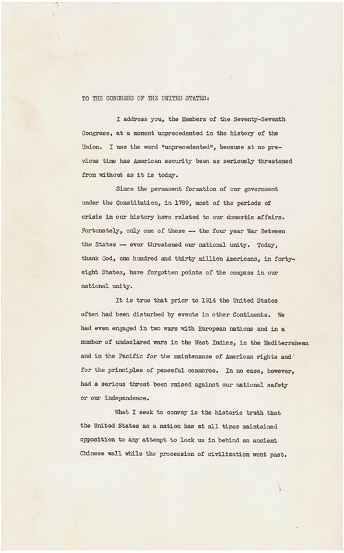

U.S. FOREIGN POLICY / WEEK 07
Between the world wars and into World War II
- 1921–1945
- Dr. Murat Toman
U.S. FOREIGN POLICY / WEEK 07
The main idea
- The United States avoided some military commitments while remaining involved in trade, finance, and diplomacy. World War II expanded its role and exposed contradictions between promises of freedom and domestic discrimination.
- The United States worked with allies whose systems and interests differed. Military cooperation could defeat a common enemy while leaving major disagreements about the postwar world. Plans for international institutions reflected hopes for cooperation, but institutions still depended on decisions, resources, and competing interests.
U.S. FOREIGN POLICY / WEEK 07
Where this week fits in history
| When | Selected event |
|---|---|
| 1917 | U.S. entry into World War I |
| 1941 | Four Freedoms and entry into World War II |
| 1947 | Truman Doctrine |
U.S. FOREIGN POLICY / WEEK 07
History through a source

- This document is evidence of an official statement or decision. Its wording and appearance help us identify the source, but its promises still need to be checked against evidence of actions and results.
- Use the linked transcription or PDF to read the text. Ask who issued it, what it claims, and whose viewpoint is missing.
U.S. FOREIGN POLICY / WEEK 07
Key words explained
- Isolationism: A label often used for opposition to foreign commitments, which can hide continuing economic and diplomatic involvement.
- Coalition: A group cooperating for a shared goal, often temporarily.
U.S. FOREIGN POLICY / WEEK 07
Key words explained
- Civil liberties: Basic freedoms that protect people from unjustified restrictions by government.
- Incarceration: Confinement or imprisonment.
U.S. FOREIGN POLICY / WEEK 07
Staying out of an institution did not mean staying out of the world
- The United States rejected membership in the League of Nations but continued international economic and diplomatic activity.
- The label ‘isolationism’ can conceal these connections. A more useful question is which kinds of involvement Americans supported and which commitments they opposed.
U.S. FOREIGN POLICY / WEEK 07
War memories and economic crisis shaped choices
- The experience of World War I made many Americans wary of another major war. The Great Depression affected resources and political priorities.
- As threats abroad grew, leaders faced disputes over neutrality and assistance to other states. International danger mattered, but domestic views shaped the response.
U.S. FOREIGN POLICY / WEEK 07
The Four Freedoms linked security with values
- Roosevelt’s Four Freedoms described goals that went beyond territory or military victory. They presented freedom and security as connected issues for people at home and abroad.
- The speech is evidence of a political vision. Judging that vision also requires examining whom policy protected in practice.
U.S. FOREIGN POLICY / WEEK 07
Wartime rights were unequal
- Executive Order 9066 is central to studying the forced removal and incarceration of Japanese Americans. Its language of military authority must be read alongside what officials did and what affected people experienced.
- Universal promises of freedom did not prevent discriminatory treatment. This contradiction also matters for international credibility.
U.S. FOREIGN POLICY / WEEK 07
Winning together did not settle the peace
- The United States worked with allies whose systems and interests differed.
- Military cooperation could defeat a common enemy while leaving major disagreements about the postwar world. Plans for international institutions reflected hopes for cooperation, but institutions still depended on decisions, resources, and competing interests.
U.S. FOREIGN POLICY / WEEK 07
Politics at home and abroad
- At home: War memories, depression, mobilization, and unequal civil rights shaped policy.
- Abroad: The United States moved from selective involvement to fighting the Axis and planning the peace.
- The connection: domestic support and resources affect what leaders can promise abroad. International events can change domestic priorities.
U.S. FOREIGN POLICY / WEEK 07
How power worked
| Form of influence | How it operated in this week |
|---|---|
| Hard power | Industry, supplies, finance, and armed forces supported the war effort. |
| Soft power | The promise of freedom could attract support, while discrimination weakened its credibility. |
- Universal rhetoric can attract support while discriminatory practices erode its credibility.
U.S. FOREIGN POLICY / WEEK 07
A worked explanation
- Does rejecting a military commitment mean a country has no foreign involvement?
- No. A state may avoid one commitment while maintaining trade, loans, negotiations, and other international relationships.
- Why this matters: The United States worked with allies whose systems and interests differed. Military cooperation could defeat a common enemy while leaving major disagreements about the postwar world. Plans for international institutions reflected hopes for cooperation, but institutions still depended on decisions, resources, and competing interests.
U.S. FOREIGN POLICY / WEEK 07
Practice with the documents
- Choose one freedom in Roosevelt’s speech.
- Find the authority described in Executive Order 9066.
- Explain why a statement of values and an account of actual treatment are both necessary to evaluate wartime policy.
U.S. FOREIGN POLICY / WEEK 07
How to support an answer
- A claim is what you argue. Evidence is a specific passage, event, or finding that supports it. Explain the connection between them.
- Example structure: “The document claims ____. This suggests ____. It cannot by itself show ____.”
- A speech can establish what a speaker said. Evidence of actions and consequences is needed to judge whether the policy worked.
U.S. FOREIGN POLICY / WEEK 07
What to remember
- Interwar engagement was selective rather than nonexistent.
- External shocks operated through domestic coalitions and institutions.
- A universal statement of values is not proof of universal implementation.
- Coalition victory left important disagreements about the peace unresolved.
U.S. FOREIGN POLICY / WEEK 07
Reading guide
- Four Freedoms Address (1941) A document from the period. Use it to identify what officials claimed or authorized, then check other evidence for the consequences. External source page; access may vary.
- Executive Order 9066 (1942) A document from the period. Use it to identify what officials claimed or authorized, then check other evidence for the consequences. External source page; access may vary.
Four Freedoms Address (1941) — External source page; access may vary.
Executive Order 9066 (1942) — External source page; access may vary.
U.S. FOREIGN POLICY / WEEK 07
Reading guide
- The Neutrality Acts, 1930s A retired historical background essay. Use it for context, and compare its account with scholarship and other perspectives. External source page; access may vary.
- From Colony to Superpower: U.S. Foreign Relations since 1776 A scholarly narrative companion for historical periods. Select the relevant period; no unverified page assignments are supplied. Publisher record; full text may require institutional access.
The Neutrality Acts, 1930s — External source page; access may vary.
Office of the Historian Milestones: retired series, retained online for historical reference; not a current-policy source.
From Colony to Superpower: U.S. Foreign Relations since 1776 — Publisher record; full text may require institutional access.
U.S. FOREIGN POLICY / WEEK 07
Video and audio guide
- Isolationism: the future of US foreign policy? Use a long historical interpretation to evaluate the interwar meaning of isolationism.
- September 3, 1939: Fireside Chat 14: On the European War Study how Roosevelt publicly presented neutrality as war began in Europe.
Isolationism: the future of US foreign policy? — Free provider page; external player may require consent or be region-dependent
March 4, 2021 event; retrospective spanning several periods, not solely the interwar years. Provider links video and MP3; video https://www.youtube.com/watch?v=j0CJczdsho8.
September 3, 1939: Fireside Chat 14: On the European War — Free provider page; external player may require consent or be region-dependent
Primary-source audio with transcript and downloadable MP3; not video.
U.S. FOREIGN POLICY / WEEK 07
Video and audio guide
- U.S. Declarations of War in 1941 Examine Congress’s role in the transition from neutrality to declared war.
- December 8, 1941: Address to Congress Requesting a Declaration of War Analyze the president’s public justification for requesting a declaration of war.
U.S. Declarations of War in 1941 — Free provider page; external player may require consent or be region-dependent
Select the named documentary under Video; Irving Swanson interview recorded July 13, 2005, combined with historical footage.
December 8, 1941: Address to Congress Requesting a Declaration of War — Free provider page; external player may require consent or be region-dependent
Primary-source audio and transcript; this provider page is audio-only, not video.
U.S. FOREIGN POLICY / WEEK 07
Using the sources carefully
- Linked readings and media offer particular viewpoints. Compare them with the lesson and other evidence. Some sources require institutional access.
- Media links and descriptions were checked when the course resources were prepared. Full playback was not tested.